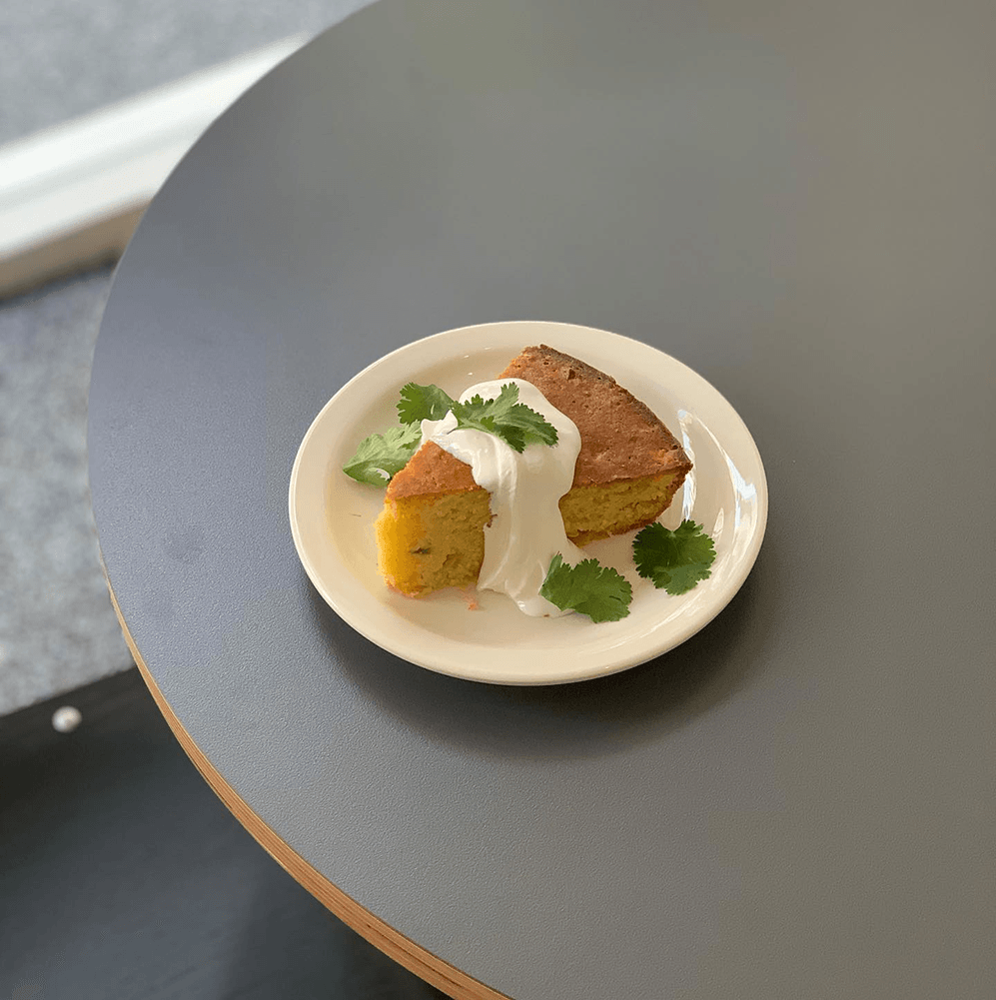

- 
- • seriously good coffee & bread -
- TAPERED COFFEE WILL MAKE YOUR DAY
A SUPER-DUPER DAY : )
TAPERED COFFEE WILL MAKE YOUR DAY
A SUPER-DUPER DAY : )
It may be too and you may not be able to stop eating.
An overdose may make you super-duper happy.
Yummy to the tummy : )
 Vanilla bean double shot(ICE)
Vanilla bean double shot(ICE)